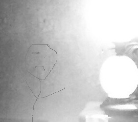
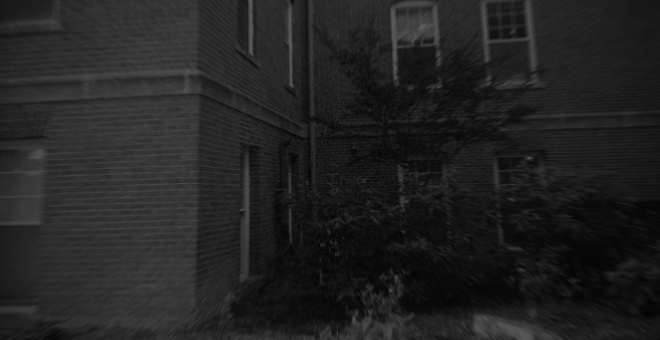
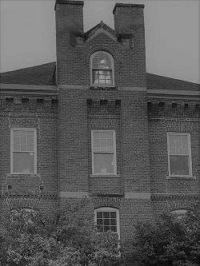
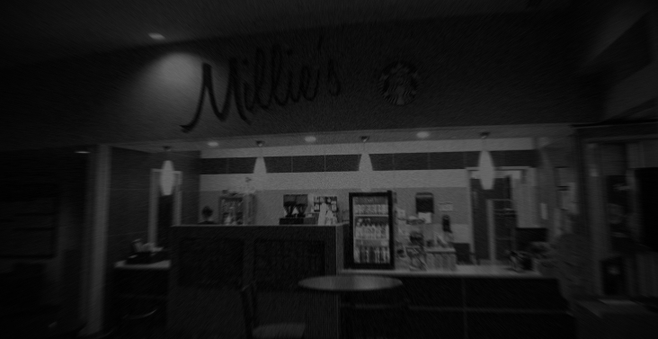
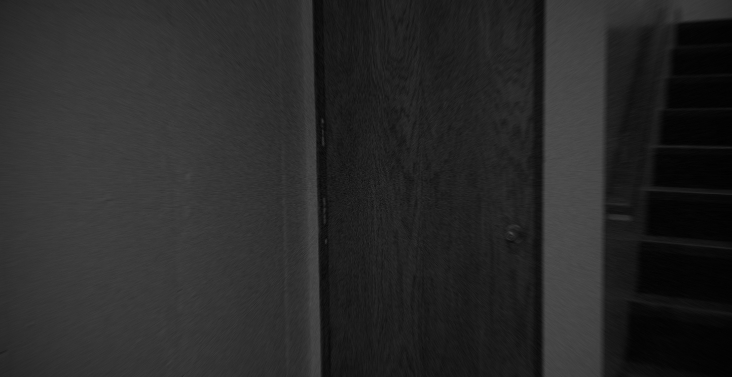
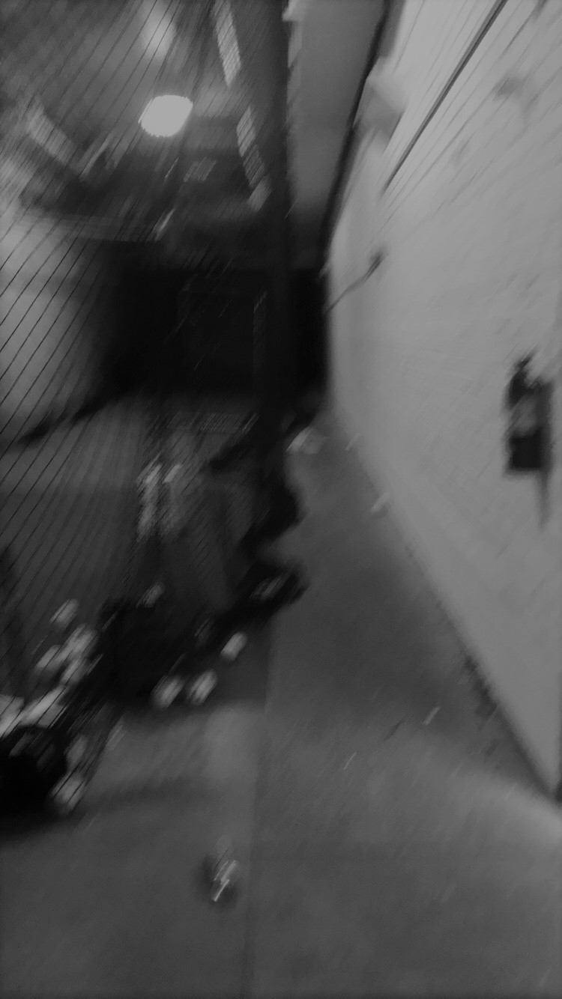

The exterior of College Hall. The seal can be seen in the pavement at the bottom of the photo.
Click the picture to enlarge.
College Hall
College Hall
Paranormal Entity: Mildred Hedges
Various sightings have reported the existence of a paranormal entity believed to be former home economics major, Mildred Hedges. According to the legend, Mildred fell to her death from the third floor of College Hall in May of 1935. Since this day, her ghost has haunted the building. Students have reported seeing this ghost looking out the windows while singing. Mildred is also believed to be responsible for the anomalous properties of the seal outside the building.
Paranormal Entity: The Simpson College Seal
Outside of College Hall there is a metallic seal implanted into the sidewalk with the Simpson College logo on it. This seal is believed to be anomalous in nature, haunted by the ghost of Mildred Hedges. According to the reports, students who step on the seal perform inadequately on their next exam. Students have explained that they would get their tests back and notice inexplainable mistakes that they would never make otherwise.
Paranormal Entity: Derdlim Hedges
Is believed to be the most terrifying ghost on Simpson's campus. This ghost is also believed to be Mildred's own twin brother. He was so devastated by what had happened to his sister that he wouldn't leave the north most room on the third floor. He eventually died in that very room and any time someone enters it they are trapped until you can convince him that you had nothing to do with his sisters death. To this very day he still remains in that room waiting for the day he gets to see his sister again. If you look close you can see him in the picture below.


The exterior of Mary Berry. Mildred has been sighted staring out these windows.
Click the picture to enlarge.
Mary Berry

The exterior of Mary Berry. Mildred has been sighted staring out these windows.
Click the picture to enlarge.
Mary Berry
Mary Berry
Paranormal Entity: Mildred Hedges
Mary Berry used to be the dorm where Mildred Hedges lived. Since the incident of 1935 students have reported seeing her staring out the windows after closing hours. Faculty within the building have reported hearing unexplainable footsteps and noises.
Paranormal Entity: The Whiteboard of Room 120
Students have reported sightings of strange drawings on the whiteboards of room 120. The drawings typically consist of smiley faces in the corners of the boards. According to one report, a student left the room after class, remembering the boards to be blank. A few minutes later, realizing that he forgot something, the student re-entered the room to find smiley faces in the corners of the board, without anybody nearby to draw them. The source of these drawings is believed to be from Mildred Hedges, but this is unconfirmed.
Unconfirmed Rumor: The Lower Level Women's Restroom
Many students report overwhelming floral scents within the Women's Restroom on the ground floor of Mary Berry. This strong incense smell is believed to be the perfume of a since deceased professor. They say when she taught she would go into the restroom to refresh her perfume before every class.

Millie's coffee shop. Named after Mildred Hedges.
Click the picture to enlarge.
Millie's
Millie's
Paranormal Entity: Albert
According to the legend, Albert was found behind the counter of Millie's after he broke in to get some desperately needed coffee while studying for finals. The next day he was found dead, presumably by caffeine overdose. Since this day, students have reported seeing the coffee machines turn on late at night without explanation.
Unconfirmed Rumor: Flickering Lights
There’s an unconfirmed rumor that the lights within Millie’s will occasionally flicker late at night. However, our hunters have yet to witness this event.
Warning! The paranormal entities that reside in Cowles Gym are potentially dangerous. Do not enter the building alone at night.

The anomalous softball closet found within Cowles Gym.
Click the picture to enlarge.
Cowles Gym
Cowles Gym
Cowles Gym seems to be haunted by many different entities. Our hunters preformed multiple overnight investigations in the gym and discovered several anomalous occurrences. Many others remain as rumors and are currently unconfirmed.
Paranormal Entity: The Softball Ghost
While staying overnight in the gym, various objects were observed being thrown out of the softball closet. Our hunters documented the objects, and the time that they were thrown.
Time (pm)
Objects
8:00 - 9:00
None
9:00 - 10:00
2 Softballs
10:00 - 11:00
6 Softballs, 1 Bat
Paranormal Entity: The Screaming Ghost
Screams, banging on doors, and lights flickering has been observed late at night in the gym. It is unknown if this is caused by multiple entities or a single paranormal being.
Unconfirmed Rumor: Down in the Dungeon
Below Cowles Gym lies the Dungeon, home to the baseball, softball and golf teams indoor facilities. However, those teams have recently discovered some paranormal activity in the dungeon. Rumor has it that whenever an athlete has gone down to the dungeon by themselves for a late night swing session they are accompanied by a series of creepy events. Whether that be the equipment gate flying open, creaking and screeching sounds, shaking of the nets, or dropping of the bats, someone else is definitely down there with you.
Unconfirmed Rumor: The Crawler
Rumors exist that describe a horrifying creature who lives within the darkness of Cowles Gym. It is reported as a bipedal lifeform that scuttles around on the walls and ceilings. This creature is believed to be dangerous, and is attracted to sound. Extreme caution is advised while in the gym late at night.
Unconfirmed Rumor: Mildred Hedges
Sightings of Mildred Hedges has been reported within Cowles Gym. According to the rumors, students would notice a humanoid figure within their peripheral vision, usually standing in the corner. However, upon looking at the figure, it would promptly disappear.
Unconfirmed Rumor: The Pulse
The pulse is an undocumented anomalous event where all electronic equipment within the premises of Cowles Gym promptly turns on and off without explanation. It has been rumored to extend all the way to the exercise equipment in the Steven Johnson Fitness Center. While our hunters have witnessed lights flickering, they did not experience an event as described by this rumor.

Below the gym lies the dungeon, home to indoor hitting facilities and paranormal creatures.